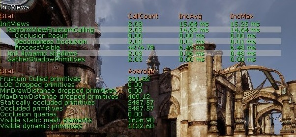
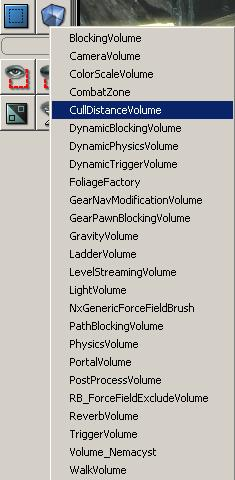
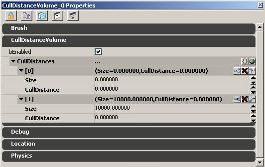

UDN
Search public documentation:
VisibilityCullingCH
English Translation
日本語訳
한국어
Interested in the Unreal Engine?
Visit the Unreal Technology site.
Looking for jobs and company info?
Check out the Epic games site.
Questions about support via UDN?
Contact the UDN Staff
日本語訳
한국어
Interested in the Unreal Engine?
Visit the Unreal Technology site.
Looking for jobs and company info?
Check out the Epic games site.
Questions about support via UDN?
Contact the UDN Staff
可见性剔除
文档变更记录: 由 Daniel Wright 创建。
概述
- Distance culling（距离剔除）
- View frustum culling(视椎剔除)
- Precomputed occlusion culling（预计算遮挡剔除）
- Dynamic occlusion culling (hardware occlusion queries)（动态遮挡剔除 (硬件遮挡查询)）
可见性剔除的性能
stat initviews 显示了可见性剔除的统计数据，如下所示：

'可见的静态网格物体元素' 是导致渲染线程事件消耗的最大元凶，所以应该仔细观察并进行优化。 这里按照每个图元应用可见性剔除方法的顺序列出了所提供的可见性剔除方法，同时也是按照在渲染线程性能消耗方面由最低到最高的顺序来列出的。- Distance culling（距离剔除）
- View frustum culling(视椎剔除)
- Precomputed occlusion culling（预计算遮挡剔除）
- Dynamic occlusion culling (hardware occlusion queries)（动态遮挡剔除 (硬件遮挡查询)）
距离剔除
剔除距离体积
剔除距离体积是非常有用的优化工具。它们可以基于单独的图元的边界框自动地设置在体积内的所有图元的剔除距离。仅当剔除距离体积的值低于图元的MaxDrawDistance （最大描画距离）时才使用。这样实现的主要目的是优化当大的室外地图具有详细的室内基础的情况，正如在虚幻竞技场3中经常看到的那样。 通过使用剔除距离体积，您可以获得一个非常精细的系统，这那里不同的区域有不同的设置，但是99%的情况中，可能使用一个单独的包含整个关卡的CullDistanceVolume(剔除距离体积)。UT3中的大多数关卡都是使用一个包围整个关卡的剔除距离体积。相关设置
 以下属性影响图元被遮挡以及它如何遮挡其它图元的方式：
以下属性影响图元被遮挡以及它如何遮挡其它图元的方式：
- bAllowCullDistanceVolumes
- 默认为真。当这项为真时，图元将会受到剔除距离体积的影响(如下所示)。如果CachedMaxDrawDistance (缓存的最大描画距离)小于图元的MaxDrawDistance (最大描画距离)设置的值，那么剔除距离体积信息将会覆盖图元的MaxDrawDistance (最大描画距离)中设置的信息。
- CachedMaxDrawDistance
- 是个不可编辑的属性。这个文本域显示了那个图元所在的任何CullDistanceVolumes(剔除距离体积)设置的剔除距离。在这个属性屏幕截图中，因为没有剔除距离体积，所以设置它的值为0。
- MaxDrawDistance
- 默认值为0，这意味着图元将永远不会独立地基于那个距离而被遮挡。MaxDrawDistance (最大描画距离)的值以虚幻单位为单位，所以理想的值可能会根据您的项目的刻度而变化。剔除距离对于非常小或者非常细的物体比如装饰细节或栏杆，这些物体在一定距离后变得如此小以至于很难看见。通过在向前和向后移动相机的过程中调整剔除距离来找到一个‘谈入弹出’不是非常明显的地方设为剔除距离。
添加剔除距离体积

可以像添加其它的体积类型那样来剔除距离体积。首先，制作一个您期望的大小的画刷(也就是，可以覆盖整个关卡的画刷)。关于制作画刷的更多细节，请参照使用BSP画刷页面。右击 ‘Add Volume(添加体积)’ 按钮，然后从下拉菜单中选择 CullDistanceVolume(剔除距离体积)。 如果您已经在世界中创建了一个剔除距离体积，选择它然后按下F4或双击来弹出actor的属性对话框。 这里是一个新创建的CullDistanceVolume(剔除距离体积)的属性：
有一个单独的称为“CullDistances(剔除距离)”的数组，它可以拥有您可以添加的任意多的点。每个点有一个‘尺寸’和相应的剔除距离。对于每一个在体积内部的图元来说，它都会选择盒图元的边界框直径最相近的‘尺寸’，并且那个相应的“Cull Distance(剔除距离)”将成为图元的“Cached Cull Distance(缓冲剔除距离)”。 中心点被剔除距离体积包围并且设置bAllowCullDistanceVolume为TRUE(默认值)的所有图元都将会基于CullDistances(剔除距离)数组的设置来更新它们使用的剔除距离。值得注意的是手动地在图元上设置剔除距离将会和剔除距离体积协同工作，因为代码内部会选择较低的值，除非设置它为0。CullDistances(剔除距离)数组是用于这个尺寸组的剔除距离的尺寸(物体边界盒的直径)映射，代码将会查找最匹配的一个，并分配相应的剔除距离。 剔除距离体积的默认设置是有两个项，Size=0、CullDistance=0和Size=10000、CullDistance=0。通过设置第一个CullDistance为1000，那么中心点在边界盒直径小于5000的体积内部的物体将会使用1000作为有效的剔除距离，所有大于体积直径的物体将会设置剔除距离为0，也就是没有距离剔除。最适合的使用方法是设置最小的值，从而不必担心数组元素的顺序问题。为了在不影响较小物体的剔除距离的情况下禁用剔除功能的高端处不需要插入虚构点，代码将不会再剔除距离键进行线性插值。 在有重叠的剔除距离体积的情况下，引擎将会为图元选择最极端的设置(大于0的最低值)。 为了便于组织，保持您的CullDistances数组中的所有尺寸按照从最小到最大的顺序是个好主意。使用‘insert new item here(从这里插入新项)’按钮可以添加中间值。 当创建一个新的剔除距离体积时，它通常会添加几个新的CullDistances，它们具有不断增加的尺寸和剔除距离。这里的实例展现了在初始状态时这些设置的样子：0: Size: 0 CullDistance: 1000 1: Size: 128 CullDistance: 2048 1: Size: 256 CullDistance: 4096 2: Size: 512 CullDistance: 8192 3: Size: 1024 CullDistance: 16384 4: Size: 2048 CullDistance: 0然后您可以环绕查看关卡，看它的物体是否有任何可见的突然的弹入弹出(或许其实设置不足够的极端以至于不能开始)；然后进行较小的修改，或许可以在现有的元素之间添加几个新的尺寸组。查看各种不同图元的‘Cached Cull Distance(缓冲剔除距离)’是有帮助的，以便您可以看到它们正在进入那个尺寸类别。您也可以从编辑器视口工具条中的SHOW FLAGS(显示标志)下拉列表中选择‘Show Bounds(显示边界)’。然后选择一个图元，那么在它的周围应该会渲染一个球体用于显示边界。按下并拖拽鼠标中间键来沿着球体的直径描画一个尺子来度量边界盒。 要想把您的剔除距离体积调整好可能需要花费一定时间。通常把您列表中的最后一项设置为‘剔除距离的最大值’是个好主意，设置尺寸为一个较大的值并且设置剔除距离为0。这将会阻止大的山脉或建筑物被剔除。您也可以简单地禁用这些图元的“AllowCulldistanceVolumes”功能，但是那样您将需要做很多工作。